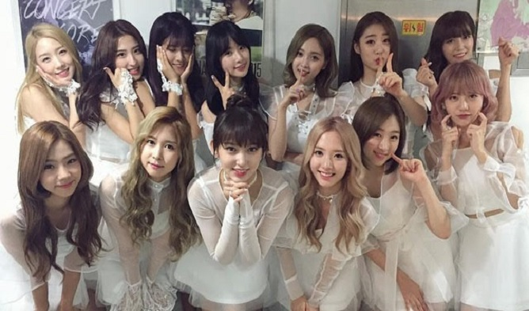
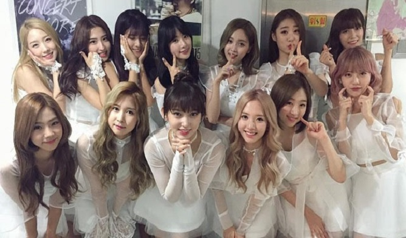

劉宇軒
Kevin
我叫劉宇軒，目前在世新資傳系就讀，有在考慮轉個口傳還是新聞之類的。
My name is Kevin. I really want to have a girlfriend.
喜好科目
Math
從國中第一次在補習班接觸到別於國小基礎數學的代數和基礎幾何時，我就發現自己非常擅長並沉迷於解開數學題目，並嘗試更多不同的方法，運用不同的邏輯去找到更多道路去達到最終的目的。而函數部分不論是線性函數或三角函數都讓我十分的著迷，覺得為何世界上能夠存在著這麼厲害的方法去解答一些在一般情況很難得知的答案。現在我很想學習微積分，目前我只會基礎的微分和積分，但我想更加了解這些並學習運用。
Chinese
高中在補習班聽到要補國文的時候，還嗤之以鼻的覺得為甚麼要補國文這種自己讀就好的科目，雖然是這樣子認為，但我的國文成績卻一直遊蕩於60~70區間，直到高二上第一次段考後，國文成績創出了新低53分，當時我才決定要去試聽看看，沒想到補習班的國文老師陳漢教國文的方式這麼有趣，用有效的整理和方式讓我們能夠更容易記得國學常識，用生動的比喻以及有趣的解釋讓我們更容易理解古文中的奧妙，用人生的經驗讓我們更容易去看出有關於中文的美，真的是陳漢老師讓我喜歡上中文，甚至在考大學時以中文系為第一志願，雖然後來因為家庭因素選擇了資訊傳播，但直到如今我仍然沒有放棄對中文的喜好。
教育程度
高中
普通高中
大學
資訊傳播學系
興趣

TWICE 的問候口號為：「One In A Million！大家好，我們是TWICE。」（韓語：One In A Million！안녕하세요 트와이스 입니다.），並在說One In A Million時在臉旁比出兩個一。
其中，假忙內娜連（韓語：나연）、舞蹈機器MOMO，（韓語：모모）最可愛。

粉絲名為「우정」（UJUNG）。宇宙少女的開場介紹口號是「Would U Like！大家好！我們是宇宙少女！」說出「Like」的同時，舉起右手、手心向前。
其中，孟美岐和吳宣儀（最可愛的成員）於2018.04.21返回中國參加真人秀節目《創造101》進而正式以中國女團『火箭少女101』出道。正式以中國女團『火箭少女101』出道。
 

由2012年5月6日開始，節目在每個星期日下午6時10分開始播放，每集大約一個半小時分鐘，自從2019年1月6日起，節目改為每個星期日下午5時整開始播放。臺灣方面是FOX頻道得到官方授權播放，自從2017年12月10日開始每週日開始在愛奇藝台灣站跟播。
最著名的遊戲環節是貓抓老鼠「撕名牌大戰」，全盛時期幾乎每一集都會有這個遊戲環節。除此之外節目組現在也致力於開發各種新的不同的環節，以增加觀眾們的觀看體驗。
現任主持為8名Running Man家族成員：劉在錫、池錫辰、金鍾國、哈哈、宋智孝、李光洙、全昭旻、梁世燦。


想去的國家
冰島
我一直很想去去看冰島，那裏除了極光，還有藍洞跟地熱溫泉，很多很棒的觀光景點值得一去。

美國
美國是一個非常棒的國家，而且很大很大，光一個州就可以玩一個月以上，我最希望的不只是去那裏玩，而是直接移民到美國去。

義大利
義大利是飽含藝術與文學氣息的一個國家，除了比薩斜塔、競技場外，還有水都威尼斯和非常文明的梵諦岡教堂。

希臘
雖然這個國家破產了，但是我還是很想去看看他們的文化以及屬於希臘人的驕傲。

法國
說到浪漫，腦海裡第一個浮現的都是法國巴黎。被寫在歌詞裡的左岸跟香榭大道，譜出了愛的真諦。

英國
英國最有名的就是劍橋跟大笨鐘了，但是除了這些我還想去格林威治天文臺看看，去尋找從小聽到大的記憶。